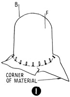

1952—How to Make Hats
by Ruby Carnahan
Blocking Material for Covering Frames
BLOCKING MATERIAL FOR COVERING FRAMES
This requires material which can be stretched. Often an entire hat—crown, brim and facing—can be covered with one piece of blocked material. If a large frame is to be covered, crown and top brim may be covered with one piece of material and a bias facing used to cover under side of brim. This method of covering a frame does not require a pattern. Only used with stretchable material.
MATERIAL REQUIRED
- Utility block No. 796 in correct headsize
- 1/2 yard of material
- Straw cloth, jersey or any other stretchable material
BLOCKING
(Illus. 1) Place 1/2 yard of material on block with a corner of material in front. Pin material down to block in front, back and on each side. Steam over a teakettle, pulling and pinning material to extreme bottom of block until material is free from wrinkles and fits smoothly around bottom of block. Use ordinary straight pins to pin material to block (push pins may leave holes in material stretched to the extent that this method requires). Wear a thimble to push straight pins into block. After pin is pushed through material into block, bend pin down flat. Let dry and mark front on material before removing material from block.
FITTING MATERIAL TO FRAME
(Illus. 2) Place blocked material on crown of frame, pinning the front of material to the front of frame. Smooth material and pin all around bottom of crown, then sew material to bottom of crown with tiny pick stitches, very close together. Pull material out over brim and pin material to brim edge (Illus. 3). Sew around brim edge with tiny close-together pick stitches. If frame is small enough to be covered in one piece, pull material in to headsize on under side of frame and sew around inside of crown (Illus. 4). Cut off excess material around headsize.
USING A SEPARATE BRIM FACING
Steam and block material as directed and use for crown and top of brim. After sewing blocked material around bottom of crown and over edge of brim, cut off excess material around brim just outside of sewing (Illus. 5). Cut a bias piece of material 2" wider than brim facing measures. (Illus. 6) Pin this bias piece of material around edge of brim, stretching material to fit smooth and tight. Pin ends together, making a bias seam. Remove bias piece from brim, stitch and press seam open and replace on brim with seam In back. Again pin facing around edge of brim.
WIRING BRIM EDGE
(Illus. 7) Fit a wire around edge of brim and join with a wire joiner. Remove a few pins at a time from facing on brim edge, turn material over wire and repin to brim edge. Continue until facing has been turned over wire and pinned all around edge of brim. Sew facing to brim under wire using a back stitch. Pull facing in at headsize and sew to frame around headsize. Cut off any excess material and finish headsize with a lining and headband.
Instructions for linings and headbands on page 45.